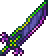
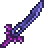
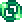

Истинная грань ночи
Истинная грань ночи (True Night's Edge) — это Хардмодный пост-меховый меч. Он обладает самым высоким базовым уроном среди всех пре-плантерных мечей. Является усиленной версией грани ночи, которая запускает вращающийся зеленый меч (Ночной луч) в направлении курсора, урон которого равен 150% урону меча. Несмотря на наличие автоатаки, Ночной Луч вылетает с интервалом в 1 секунду. Истинная грань ночи - это один из компонентов, необходимых для изготовления Терра-меча
Истинная грань ночи

Характеристики
Тип Оружие Меч
Урон 70

Скорость 32 (Медленная)
Атак/сек 1.9
Крит. шанс 4%
Отбрасывание 4.75 (Сильное)
Редкость Желтая
Продажа 10

Лучшая модификация Легендарный
Кол-во исследований 1 исследование
Рецепт
Рабочие места:

Мифриловая наковальня

Орихалковая наковальня
Ингридиент(ы):

Грань ночи
Душа могущества 20шт
Душа страха 20шт
Душа зрения 20шт